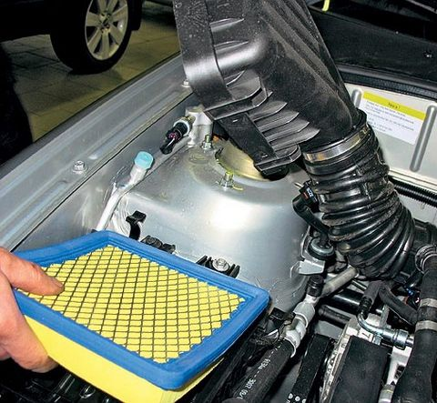

Следить за состоянием фильтров в автомобиле – это первое, что нужно делать при обслуживании машины. Зачем нужны фильтры в транспортном средстве и сколько стоит сегодня свежий воздух для двигателя и для водителя? Чем грозит несвоевременная замена старых фильтров? Сегодня мы поговорим именно об этом.
Классификация фильтров
По способности задерживать пыль и мелкую грязь фильтры делятся на три вида:
Первый тип называется «абсолютные фильтры». Они почти полностью улавливают всю копоть и пыль.
Приспособления второго класса способны задержать грязь более 1 мкм. Третий класс могут уловить загрязнения выше 10 мкм. Вне зависимости от производителя фильтры очень похожи друг на друга по своей структуре.Топливные фильтры
Топливные фильтрационные компоненты хорошо защищают двигатель транспортного средства от вредных частиц, которые, увы, часто встречаются в некачественной солярке или бензине, кроме этого они оказывают помощь насосу при качании бензина. Специальный слой в данных фильтрах изготовлен из особенной бумаги, которая пропитана акриловой смолой. Топливный фильтр заменяется на новый в зависимости от того, находится ли он внутри бака или является выносным. Для внутренних оптимальный срок службы составляет около 100 тысяч км, для выносных — 50 тысяч.Воздушные фильтры
Воздушные фильтры оберегают двигатель машины от пыли, которая утяжеляет рабочую смесь, ухудшает динамические свойства мотора и увеличивают расход топлива. Если вовремя не поменять воздушный фильтр, это приведет к повышению нагрузки на фильтрующий элемент. Последний в свою очередь может легко порваться и «выплеснуть» всю грязь и пыль, скопившуюся в двигателе. Покупая новый воздушный фильтр, следует обратить внимание на очень важный фактор: как плотно элемент прилегает к корпусу, иначе уровень фильтрации будет всего лишь 60-70 %, а это чревато выходом из строя мотора.Салонные фильтры
Салонные фильтры устанавливаются для предохранения салона автомобиля от неприятных запахов и частиц пыли. Также он положительно влияет на работу кондиционера. Такие приспособления бывают двух типов: на основе фильтровальной бумаги и на основе активированного угля. Последние в свою очередь делятся на фильтры с мелкодисперсным углем, который мешает прохождению воздуха, и с частицами угля большого размера, что помогает движению воздуха через фильтр, к тому же они полностью поглощают запахи. Эффективность таких фильтров выше, но и стоят они дороже приспособлений на бумажной основе. Минус угольных фильтров в том, что их функционирование заметно ухудшается влажностью воздуха.Масляные фильтры
Масляные фильтры используются для очищения масла в моторе от нежелаемых частиц пыли. Очень важно покупать масляные приспособления высокого класса, так как плохое качество быстро скажется на двигателе.Цена и сроки замены фильтров
Специалисты рекомендуют менять масляные фильтры через 10 тысяч км пробега вместе с маслом в моторе. Салонные и воздушные — два раза в год.Цены фильтров сильно отличаются. Например, для автомобиля марки Toyota Corolla за фирменный комплект придется заплатить около 7 000 рублей. А вот на дубликат производства фирмы «Deko» уйдет всего 1 300. Разница в стоимости очевидна, однако опытный водитель знает, что экономия на фильтрах — это риск не только здоровьем мотора, но и своим.
Возьмем для примера отечественный автомобиль ВАЗ-2110. Цены на фильтры разных производителей так же отличаются, но не существенно.
От чего же зависит стоимость? По словам директора фирмы ООО «АвтоФильтр» Джумеева Даурена, дело не в качестве, а в брендах. Европейским производителям приходится еще платить и за доставку товара. Именно поэтому купить фильтр отечественно производства можно гораздо дешевле, без накруток за знак качества. Конечно, зарубежные фильтры немного лучше наших, зато стоимость ниже в пять раз.
Следите за состоянием фильтров в авто и ваш железный конь будет служить своему хозяину верой и правдой многие годы. Удачи и будьте аккуратны!